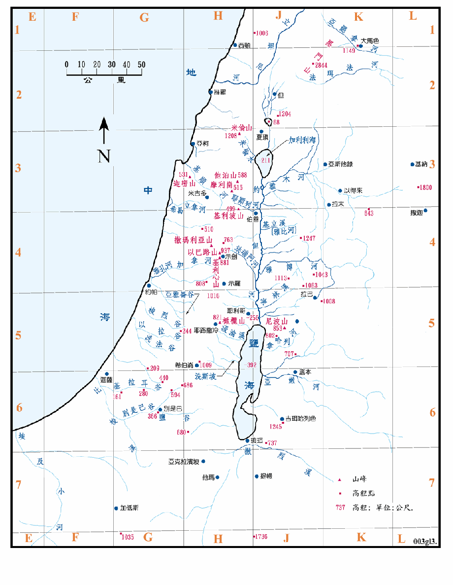

约但河西或内约但 (Cis-Jordan) 的地形，虽然有山地、盆地和平原之分，但整体来说，仍然是中央高，东西两侧低的情形，故沿中心线之狭长地区可称之为中央山地，也是内约但的分水岭。西侧的雨水就从东向西流入地中海，东侧的水则向东流入约但河谷。只是这个地区内，可说都是常年乾旱的乾溪，只有在下大雨的时候才偶而有流水。
约但河东或外约但 (Trans-Jordan) 的河流则都是自东向西流入约但河。其东是沙漠地带。此一地区内有三条常年有水流的小河，还有四、五条经常有水的小溪，注入的水约占约但河的四分之一。
圣经中所称之河、溪和谷是很难明确的区分，因为迦南地地形陡竣，河流短而水流湍急，有些常年有水，可称为河，希伯来文称 Nahar。但是有些在旱季或常年都是乾涸的，只有在大雨时才会有流水，所以只能称为谷或旱溪，阿拉伯文称洼底 (Wadi)，希伯来文称 Nahal。在本书的各图中，均是以深蓝色实线代表常年有流水的江河，以浅蓝色的细线代表洼底，即是溪和谷等旱溪。
又本书中之各图所绘，多是根据现况绘成，与远古之实况难免有些差异。
迦南地地面的高度起伏极大，而本书之各地图都很小，所以很难用等高线或颜色来表示地面之高低情形，因此就省略不画，为补其不足，就详细的画出河流和溪谷的位置，如此不但可以大致的了解地形的变化，也可作为城镇等位置参考用的地标。
图中绘有圣经中所提到的诸山峰和河流，另以红点表示该一位置和山峰的高度 (公尺)。